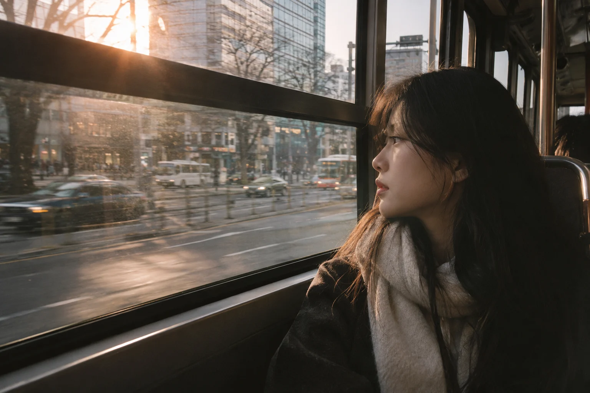

청년 인터뷰 및 공동 창작 프로젝트
어릴 적 꿈과 오늘의 나
Childhood Dreams, Life Today
어릴 때 꿈꿨던 어른과 지금의 나. 대학생의 이야기를 듣습니다.

프로젝트 소개
어릴 때 우리는 어떤 어른이 되기를 꿈꿨을까요? 그때 상상했던 모습과 지금의 나는 얼마나 닮아 있을까요? 크레비안네트워크는 청년들이 과거에 꿈꾸었던 모습과 지금의 삶, 앞으로의 꿈에 관한 이야기를 듣고자 합니다. 원하는 방향이 맞으면 창작자들과 함께 그 이야기를 음악이나 글로 만들어볼 수 있습니다.
이런 이야기를 듣고 싶어요
- 어릴 때 꿈꾸었던 나의 모습
- 지금의 내가 살아가는 이야기
- 시간이 흐르며 달라진 꿈과 가치관
- 앞으로 되고 싶은 어른의 모습
특별한 경험이나 창작 능력이 없어도 편하게 참여할 수 있어요.
참여 대상
대학생 중 자신의 이야기를 나누고 싶은 분이라면 신청할 수 있습니다.
참여 진행 방식
- 프로젝트 확인
프로젝트의 취지와 참여 방법을 확인해 주세요.
- 정식 인터뷰 신청
연락처와 인터뷰 가능한 요일 및 시간대를 남겨 주세요.
- 일정 조율
담당자가 신청서의 연락처로 연락해 일정을 조율합니다.
- 정식 인터뷰
자신의 경험과 생각을 편하게 나눕니다.
- 공동 창작 가능성 논의
참여자와 제작사의 방향이 맞으면 공동 창작을 별도로 논의합니다.
공동 창작 안내
서로 원하는 방향이 맞으면 창작자와 음악이나 글을 만들 수 있습니다. 인터뷰는 그 자체로 참여가 완료됩니다. 작품 제작, 공개, 권리 및 수익 배분은 별도로 협의합니다.
자주 묻는 질문
창작 경험이 없어도 참여할 수 있나요?
가능합니다. 정식 인터뷰는 자신의 경험과 생각을 나누는 시간입니다. 별도의 창작 능력은 필요하지 않습니다.
인터뷰는 언제 진행하나요?
신청 후 담당자와 별도로 일정을 조율합니다.
인터뷰 내용은 공개되나요?
인터뷰 참여와 외부 공개는 별개의 절차입니다. 촬영·녹음·공개 및 작품 활용 여부는 목적과 범위를 설명하고 각각 별도의 동의를 받습니다.
인터뷰를 하면 반드시 노래나 책으로 제작되나요?
공동 창작은 별도 제안과 상호 협의를 통해 결정됩니다.